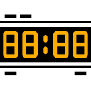
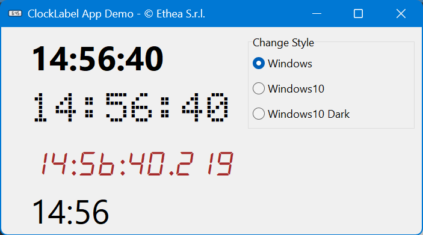
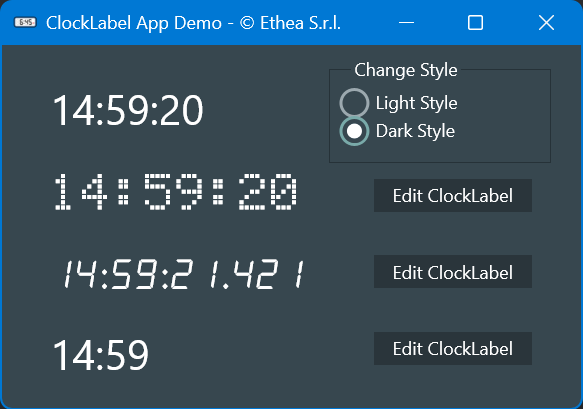

Examples of Delphi Components for VCL and FMX, used for Tutorial Speech at ITDevCon 2025 in Milan (Italy).
A simple ClockLabel inheriting a TLabel and incorporating a TTimer (VCL and FMX Versions).

VCL Demo:

FMX Demo:

type
TClockLabelType = (ctCustomClock, ctClassicClock, ctHourMinutesClock, ctMillisecondsClock);
TSpecialFont = (sfOther, sfDotMatrix, sfAlarmClock);
const
SpecialFontNames : Array[TSpecialFont] of string =
('Other Font', '5x7 DOT Matrix', 'alarm clock');
//TClockLabel Properties
property ClockType: TClockLabelType read FClockLabelType write SetClockLabelType default ctClassicClock;
property DisplayFormat: string read FDisplayFormat write SetDisplayFormat stored StoreDisplayFormat;
property SpecialFont: TSpecialFont read FSpecialFont write SetSpecialFont default sfOther;
property TimerInterval: Cardinal read GetInterval write SetInterval default 1000;
//TClockLabel Event-handlers
property OnChange: TNotifyEvent read FOnChange write FOnChange;

Author: Carlo Barazzetta
Copyright © Ethea S.r.l.